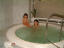
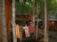
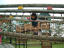

2002年7月13日 15時35分撮影
馬頭琴にチャレンジ。由起子いわく「お馬ちゃんのヴァイオリン」2002年7月7日 11時35分撮影
エプロン着けてお手伝い：自分の靴を洗っています。2002年6月24日 12時19分撮影
上富良野にある「フラワーパーク」その名の通り、色んな種類の
お花が絨毯のように咲いていました。景色もグッドです！
2002年6月23日 20時41分撮影
トマムのお部屋には、デーンとこんなに大きなジャグジー風呂が
ありました。まるでプールです。サウナもあるのだ。ゼイタクゥ～！
2002年6月23日 16時03分撮影
今回一番気に入った「ニングルテラス（新富良野プリンホテル）」
森の小人になったような気分。どのお店もとっても素敵なのです。2002年6月23日 13時24分撮影
「北の国から」の石の家がある付近。ママはこの干草のカタマリが
大好きなのだ。由起子の背丈よりも大きいのだ！2002年6月23日 11時34分撮影
占冠から富良野へドライブ。映画「鉄道員」の舞台となった
幌舞駅（本当の駅名は幾寅駅）2002年6月23日 10時20分撮影
トマムの敷地内でのお散歩タイム。タンポポの綿帽子に夢中。2002年6月23日 8時52分撮影
後ろに見えるタワーが宿泊ホテル。向かって右側の建物の
３６階に滞在しました。眺めはバツグン。パパに感謝です！
2002年6月22日 13時13分撮影
最近「アスレチックもの」の遊具があると、必ず吹っ飛んで行く。
ママがヒヤヒヤしてても、由起子は平然とつなわたりぃ～